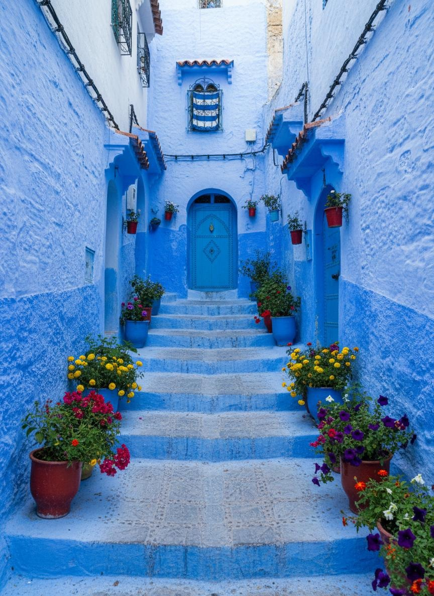

⚡ Chefchaouen Highlights & Private Perks
- The Iconic Cobalt Blue Alleys: Stroll unhurried through photogenic blue-washed stairways, flower pot facades, and ornate wooden doors.
- Spanish Mosque Sunset Viewpoint: A gentle 20-minute panoramic hike overlooking the entire blue village as dusk illuminates the Rif peaks.
- Plaza Uta el-Hammam & Kasbah: Relax at shaded outdoor cafes beside the 15th-century red-walled Kasbah fortress and Grand Mosque.
- Ras El Maa Mountain Spring: Watch cold mountain water flow down from the Rif peaks where local women gather to wash wool and carpets.
- Bespoke Artisan Weaving: Discover indigenous Rif mountain handicrafts, woven blankets, wool djellabas, and goat cheese.
Morocco’s Most Serene Mountain Sanctuary
Perched between two horn-shaped mountain peaks in the northern Rif range (from which the Berber word Chefchaouen derives: "watch the horns"), the Blue Pearl is an aesthetic dream. Founded in 1471 by Moulay Ali Ben Moussa Ben Rached El Alami as a secret fortress against Portuguese invasions, the town welcomed Jewish and Muslim refugees fleeing the Spanish Reconquista.
They painted their homes in soothing shades of blue—a tradition with deep spiritual roots, reflecting the sky and God’s heaven, while practically keeping houses cool and repelling mosquitoes.
"Unlike the frantic energy of big city medinas, Chefchaouen moves at a slow, peaceful mountain tempo. Every turn is an oil painting of indigo, turquoise, and cobalt."
— ROAM MOROCCO FIELD REPORTTraveling with our private chauffeur means you bypass slow, crowded tour buses. We plan your departure so you arrive before the bus crowds, explore the best secret corners, and return in absolute comfort.
Sample Private Day Excursion from Fes / Tangier TAILORED PACING
Fes or Tangier Departure → Rif Foothills
Your private driver picks you up directly at your riad door in an executive, air-conditioned vehicle. Enjoy a peaceful drive through olive groves, cedar-covered hills, and the Rif mountain range. Stop for fresh mountain coffee and panoramic photo viewpoints overlooking the dam of Sidi Chahed.
Outa El Hammam → Artisan Weavers → Ras El Maa
Arrive in Chefchaouen. Walk through the blue maze with your guide or at your own leisurely pace. Discover the hidden photo corners, the leather goods, and the famous leather babouches. Savor lunch at a charming terrace restaurant overlooking the square, sampling local goats' cheese tagines and fresh fig salads.
Panoramic Viewpoint → Relaxing Evening Transfer
Before heading back, take the scenic trail to the historic Spanish Mosque perched on the hill above the town for the classic panorama of the blue town set against the mountains. Your chauffeur welcomes you back to your vehicle for a relaxed evening drive, dropping you directly at your accommodation.
What's Included in Your Chefchaouen Tour
✔ INCLUDED
- Dedicated private air-conditioned vehicle with fuel & tolls
- Professional English-speaking Berber chauffeur
- Door-to-door hotel/riad pickup and drop-off (Fes or Tangier)
- Flexible hours in Chefchaouen (no rushed schedules)
- Chilled bottled mineral water in the vehicle
- Spanish Mosque panoramic walk assistance
✕ NOT INCLUDED
- Lunch in Chefchaouen (plenty of recommendations provided)
- Optional Kasbah Museum entrance ticket (~60 MAD)
- Discretionary driver gratuity
Frequently Asked Questions: Chefchaouen Tours
Can we do this tour starting in Tangier and ending in Fes?
Yes! This is one of our most popular one-way transfers. We pick you up in Tangier (airport, hotel, or ferry port from Spain), drive you to Chefchaouen for 4–5 hours of exploration with your luggage safely stored in our vehicle, and then proceed south to drop you off at your riad in Fes.
Are there lots of stairs in Chefchaouen?
Yes, Chefchaouen is built into the hillside and features many cobblestone steps and slopes. We recommend wearing comfortable walking shoes with good traction. We can easily tailor the walking route to be as gentle and accessible as needed.